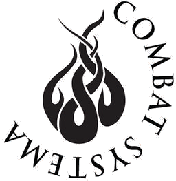

Combat Systema is a street and battlefield tested martial art integrating Slavic combative systems (both traditional and from the former Soviet Union). Visit the International Combat Systema Association for more information.
Offensive and defensive knife work are fundamental to a robust understanding of self-defense. Earning a healthy respect of what a knife can and cannot do and the realities of defending against a knife are critical to Primal Defense's view of conflict resolution.
The stick is the most universal weapon, whether in the form of a baseball bat or machete. Understanding how a stick operates in offensive and defensive capabilities is critical to a complete system.
Fists, open handed strikes, kicks, and well trained footwork are crucial to hand-to-hand combat. Learn how to properly zone, create distance, close, and deliver a variety of strikes.
Grappling is a natural instinct and the ground is a common place to find yourself in a fight. Having an understanding of escapes, mobility, and common attacks is crucial to building confidence in the face of danger.
Identifying potential conflict and preventing physical engagement are two of the most valuable skills in a self-defense arsenal. All aspects of training integrate a phase involving tactical awareness, identification, and resolution before escalation can occur.
Andrew Grapsas is a Level 3 Combat Systema Instructor under Kevin Secours (head instructor and founder of the International Combat Systema Association), a black belt in Taekwondo, and a white belt in Brazilian Jiu-Jitsu.
Movement has always been fundamental to Andrew's world. He has practiced yoga, the Alexander Technique, is an avid rock climber, and is classically trained in voice.
In addition to being a student of the body and mind, Andrew has professionally taught engineering, both for private corporations and universities.
At Primal Defense Combat Systema, Andrew bridges his love of the physical and mental with his deep joy of teaching.
Andrew believes in a soft, tailored approach to the martial world couched in reality and biomechanics. Combat Systema and Andrew's methodologies allow a student to work through their life experiences, fears, and impingements to achieve a new level of freedom, understanding, and certainty.
Everyone has a right to feel safe, secure, and confident in their self. Primal Defense Combat Systema is for those that are uncertain, think themselves weak, are afraid to use their voices, or live with daily fear.
Remove your fear. Become confident and certain in what you are capable of achieving. Grow strong physically and mentally. Primal Defense Combat Systema is for you.